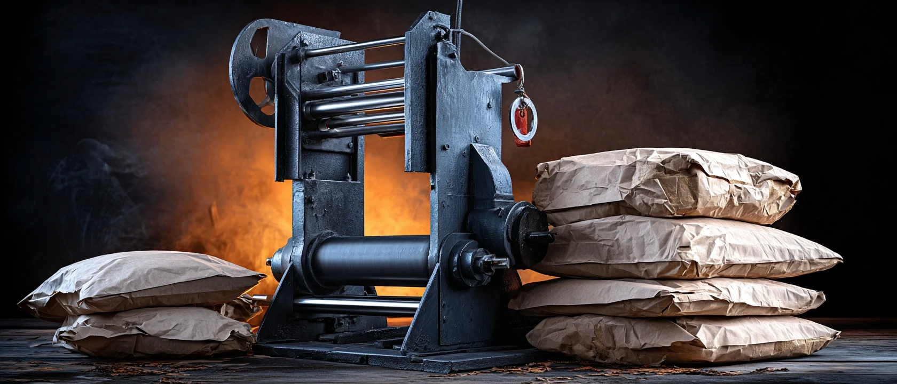
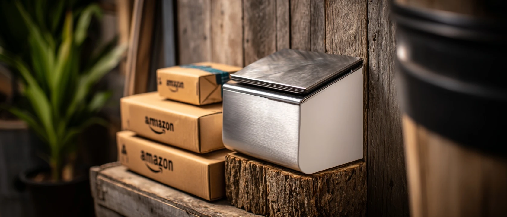
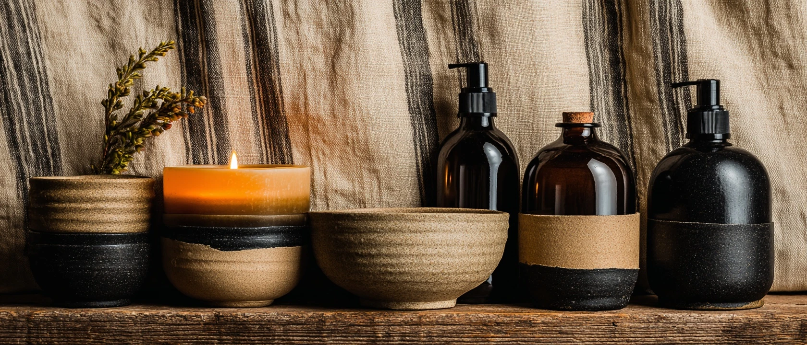
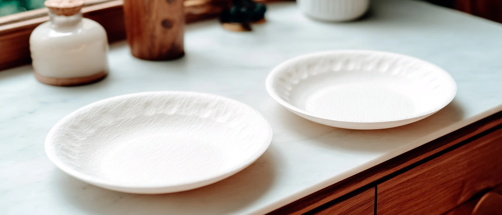
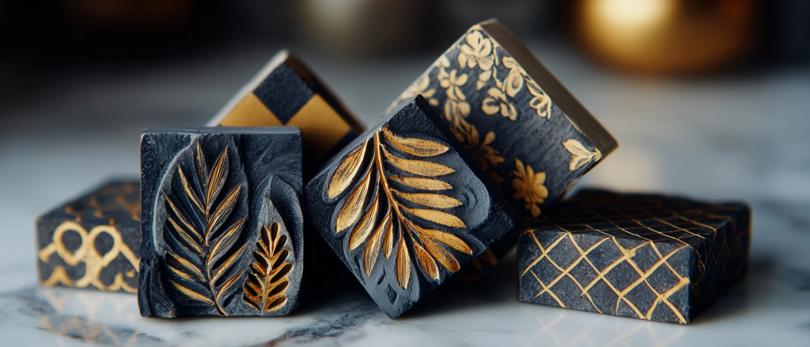
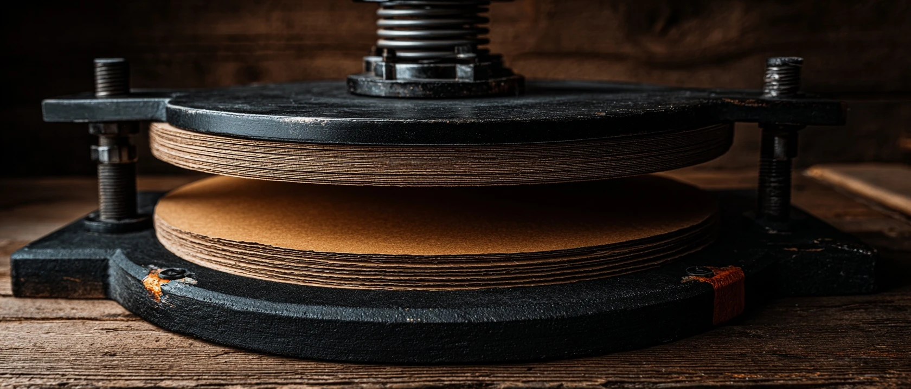
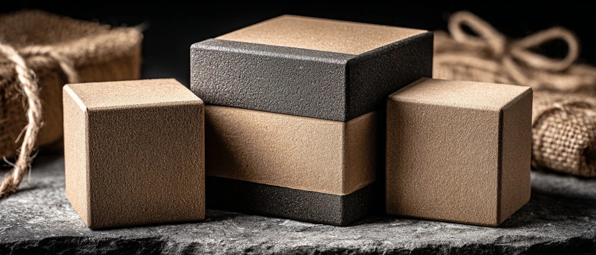
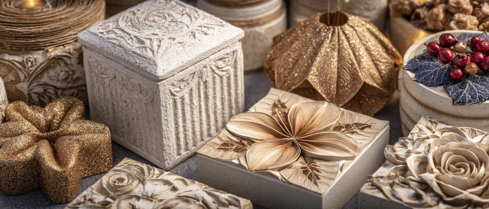
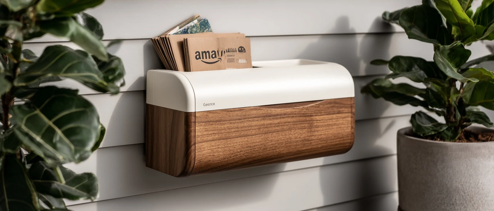

20 research-backed product concepts for the home cardboard transformation appliance category — the $0-input manufacturing platform hiding in every American garage.
Behavioral shift: US households now receive 21–60+ packages/year. Breaking down cardboard is 18+ min/month of pure friction. No home-scale transformation solution exists.
Why now: Lomi ($499 food composter) proved consumers pay for countertop waste-to-output appliances. E-commerce box volume is at an all-time high. Molded fiber is a $11B commercial industry with zero home entry point.
JTBD: "Turn the pile of Amazon boxes into something useful without thinking about it."
Chemical note: Brady's concern is valid — Amazon boxes may contain PFAS and heavy-metal inks. Every food-contact idea below includes an explicit safety treatment. Non-food ideas skip this entirely.
Four of the top 6 ideas convert cardboard into fire-related products (logs, fire starters). Burning eliminates the chemical concern Brady flagged — combustion temperatures above 500°C decompose virtually all organic ink compounds. This is the simplest path to product-market fit with zero regulatory burden.
The original brief was "save $20/month on paper plates." But the deeper pain is the weekly 15-20 minutes spent breaking down boxes. FlatPack Pro (#2) and BoxBar (#9) solve the actual friction directly — neither requires any material transformation. These are the fastest paths to Michael's actual satisfaction.
Two distinct buyer profiles emerge: the Lomi buyer (sustainability-motivated, pays $250-499 for kitchen waste transformation) and the Cricut buyer (creative/craft-motivated, pays $150-400 for "making things"). BioPlate 2.0 and BoxWax Studio each address one. Pricing and positioning must pick a lane — don't straddle both.
PaperPot Farm, SoilBlock+, and NestMaker produce outputs that go directly into the ground — no food contact, no PFAS concern, biodegradable by design. The garden channel is underexplored in the maker/sustainability appliance space and has strong DTC/HomeDepot distribution logic.

Every winter, 41 million American households burn $8 Duraflame logs they could be making from the Amazon boxes piled in their garage. CardBrick is a countertop hydraulic press that transforms torn cardboard strips — with an optional beeswax binder pod — into a regulation-size fireplace log in under 3 minutes. Feed it, press it, rack it to dry for 24 hours. One standard Amazon box makes roughly 1.5 logs worth $10–12 at retail.
Brady's chemical concern is largely neutralized by combustion: burning temperatures above 500°C decompose most organic ink compounds, and Amazon moved to soy-based inks as their standard in 2022. The beeswax binder both waterproofs the log and eliminates any synthetic accelerant. The result burns 2–3 hours — comparable to commercial alternatives at zero material cost.
Market path: DTC at $99 for the press, $14.99 for a 12-pack of optional wax binder pods. Duraflame generates $151.5M/year from a category this device cannibalizes. The home-made segment is entirely white space. Amazon Prime Day is the obvious launch vehicle.
BOM: ~$18–22 (press housing, screw/hydraulic mechanism, log mold die)
Target Retail: $99 device + $14.99/12-pack wax pods
Gross Margin: ~42–45% at $99 retail
Ops Complexity: Simple — single-axis press, one mold, no electronics in base version. Co-man analog: scissor jack + custom die press
MOQ: Est. 500 units · Lead time: 16–20 weeks

Michael's real complaint isn't that he has Amazon boxes — it's that he has to deal with them. The 90 seconds of scoring the tape, fighting the corrugation, flipping the flaps, stacking neatly in the recycling bin — multiplied by 3–4 boxes per week — is 18+ minutes per month of pure friction. FlatPack Pro mounts beside the recycling bin or on a garage wall and eliminates it: feed any Amazon box in one end, press the button, out comes a flat panel ready for the stack in 8 seconds.
Mechanically it's counter-rotating rollers with a scoring die — the same mechanism in commercial box crushers, shrunk to a $149 wall-mount form factor. A proximity sensor detects box entry and starts the rollers automatically. A second button bales a stack of 10 boxes with a reusable PP strap. The output is a uniform stack 90% thinner than the original boxes.
This is pure white space. No consumer-grade automatic box flattener exists on the US market. FlatPack Pro owns the category.
BOM: ~$28–35 (motor, rollers, scoring die, sensor, housing)
Target Retail: $149
Gross Margin: ~42%
Ops Complexity: Moderate — motor, rollers, power supply, UL certification required. Co-man analog: small appliance (label printer, pasta maker)
MOQ: Est. 500 units · Lead time: 18–22 weeks

Candle-makers have known for decades that beeswax transforms any surface — it's food-safe, waterproof, antimicrobial, and extraordinary-looking. BoxWax Studio brings this to cardboard: a countertop temperature-controlled wax bath (170°F) plus a set of press molds that dip-and-form Amazon cardboard into waterproof bowls, canisters, small trays, and decorative storage boxes.
The output looks nothing like cardboard. Beeswax-dipped corrugated cardboard develops a rich amber texture — like birch bark or artisan papier-mâché — that photographs beautifully. A small container of beeswax pellets (~$12) produces 40–50 objects. Brady's chemical concern is fully neutralized: beeswax is FDA 21 CFR 175.300 approved for food contact, and the application temperature seals any surface inks beneath the wax layer before they can migrate.
The positioning is creative appliance, not recycling machine — think Cricut buyer, not Lomi buyer. That changes the price tolerance entirely. A Cricut Maker sells for $399; BoxWax Studio at $149 looks like a bargain to the same shopper.
BOM: ~$22–28 (heating vessel, thermostat, 3 molds, wax bath insert)
Target Retail: $149 + $12.99 beeswax pellet refills
Gross Margin: ~43%
Ops Complexity: Moderate — heating element requires UL/ETL certification. Molds are injection-molded PP. Similar to fondue pot manufacturing.
MOQ: Est. 500 units · Lead time: 20 weeks

Michael's original idea was exactly right — and Brady's chemical concern is precisely why it needs proper engineering. BioPlate 2.0 is a countertop wet-pulp molding machine with a built-in food-safe coating station: cardboard goes in, plates with a food-grade beeswax finish come out. The coating is the product's core IP.
Process: tear cardboard, load the wet chamber (water auto-added), blend to pulp (~4 min), press into plate molds (2 at a time, 3 min), beeswax coating applicator sprays before ejection. Total: ~12 minutes per pair of plates. Cost: ~$0.04/plate in beeswax. Michael's $20/month paper plate spend is eliminated in a single appliance purchase.
The commercial comparison is striking: molded pulp tableware is an $11.16B global market growing at 9.7% CAGR. No home-scale version exists anywhere. BioPlate 2.0 is the "Lomi for cardboard plates" — same model, same price point, adjacent buyer.
BOM: ~$65–75 (pulping chamber, press molds, coating applicator, heating element)
Target Retail: $249
Gross Margin: ~38%
Ops Complexity: Complex — wet processing, heating, food-grade coating, food-contact material certification needed. 12–18mo dev timeline.
First Move: Crowdfund + sustainability press. Whole Foods placement.

Corrugated cardboard under heat and pressure transforms into something unexpected: a rich walnut-toned material with organic layered texture. CardTile Studio applies heat (170°C) and a precision embossing die to Amazon box cardboard, producing rigid 4"×4" or 6"×6" decorative tiles — coasters, trivets, wall art panels, bathroom accents. The output looks like hand-pressed paper tile or artisan bark. Nothing like its source material.
The mold subscription library is the recurring revenue engine: 12 seasonal and thematic die packs per year ($4.99/pack or $39/year). Botanicals, geometric patterns, mid-century modern, holiday motifs. A Cricut owner already has this spending habit — CardTile Studio is a $179 alternative in the same creative ecosystem.
Sealed with food-safe lacquer (included), tiles are heat-resistant to 200°F — safe for use as trivets and coasters. No food contact by design. Brady's chemical concern is irrelevant to this category.
BOM: ~$32–38 (heated press plates, temp controller, 3 starter dies)
Target Retail: $179 device + $4.99 die packs ($39/yr subscription)
Gross Margin: ~42% device; ~70%+ on die subscription
Ops Complexity: Moderate — heated press (110–180°C), safety auto-shutoff required, UL certification. Similar to waffle iron manufacturing.

The tortilla press is one of the simplest kitchen appliances ever made: two flat plates, a hinge, a handle. CardPress Pro adds only heat (170°C) and a food-safe PLA liner sheet. Tear Amazon box cardboard into 10"×10" sections, place a liner sheet on the mold, place cardboard on top, press for 45 seconds. Eject a rigid plate. No water, no pulping, no waiting.
The liner sheet is the key innovation — a pre-formed food-grade PLA bioplastic sheet (0.3mm, similar to a restaurant plate liner) that sits between the cardboard and any food. The cardboard provides structural rigidity; the liner provides food safety. At $0.04 each in volume, liner packs bundle with the machine or sell as a $12.99 subscription of 250. This directly solves Brady's chemical concern: the cardboard never touches food.
Simpler and cheaper than BioPlate 2.0. Designed for Michael's exact use case: outdoor BBQ plates, kids' plates, picnic use. Buy-once, near-zero consumable cost. IMUSA sells 2 million tortilla presses/year at $25 — CardPress Pro is that product's smarter cousin.
BOM: ~$24–28 (cast-iron/aluminum press, heating coil, thermostat, 10 starter liners)
Target Retail: $199 with 10 liners
Liner Refill: $12.99/250 sheets (~$0.05/plate)
Gross Margin: ~42% device; ~75% on liner subscription
Ops Complexity: Simple — cast metal press + heating coil. Co-man: small appliance factory (Shenzhen/Taiwan).

FlameBox is the $49 version of CardBrick — lighter, faster, built for the outdoor fire culture rather than the indoor fireplace. Compact countertop press converts shredded Amazon cardboard plus an optional wax pod into dense fire starter cubes that light in one match and burn 15–20 minutes. Perfect for grills, fire pits, camping, and tailgating.
Weber fire starters retail at $9.99 for 24 cubes. For a household that grills twice a week May through October, that's $25–30 in fire starters per season. FlameBox eliminates this at $49 one-time cost. Wax binder pods ($9.99/20) are the optional consumable hook — works without binder for paper-log-style camping fire starting.
The UK market has proven this: brands like Certainly Wood and Flamers have built multi-million revenue businesses on compressed paper fire starters. No US home-production device exists for this category.
BOM: ~$8–12 (small press housing, mechanical ram, cube mold)
Target Retail: $49 device + $9.99/20 wax pods
Gross Margin: ~48% device; ~65% pods
Ops Complexity: Simple — mechanical press, cube mold, optional wax pour channel. BOM minimal. Similar to garlic press manufacturing.

Etsy, Michaels, and Cricut have proven creative adults pay $200–500 for a machine that makes things — not because they need those things, but because making them is the point. ArtPulp Press enters this market with a machine that turns Amazon boxes into hand-formed paper art objects: holiday ornaments, wall tiles, 3D bookmarks, decorative bowls, sculptural accents.
The wet pulp process industrial factories use for egg cartons and molded fiber packaging — that exact process, miniaturized to a $149 countertop footprint with 20 artistic mold designs included. Add water to shredded cardboard, the machine blends it, press into the selected mold, eject onto drying pad. 2-hour dry time (heated pad) produces objects with the feel of handcrafted papier-mâché but with clean, consistent mold geometry.
The mold subscription library is the ongoing revenue engine: 12 seasonal packs per year ($4.99 each or $39/year subscription). At $0 for raw materials vs. Cricut's vinyl/paper supply costs, ArtPulp Press has a fundamentally better economics story for the craft buyer.
BOM: ~$32–38 (blending chamber, press mold, heating drying plate, 5 starter molds)
Target Retail: $149 + $4.99 mold packs ($39/yr subscription)
Gross Margin: ~43% device; ~70%+ subscription
Ops Complexity: Moderate — wet pulp processing, drying mechanism (low heat pad). UL cert required. 14–18mo dev.

The real problem isn't transformation — it's the 90 seconds after every delivery. You bring the package in, find scissors, slit the tape, remove contents, and stand there holding a box with nowhere obvious to go. BoxBar is a wall-mounted unboxing + breakdown station that owns this moment: built-in scoring knife, dual roll holders for tape and stretch wrap, and a push-through mechanism that scores and collapses any Amazon box flat as you press it downward into the integrated recycling sleeve below.
No electronics. No motor. Two parallel scoring wheels (adjustable slider for box width) set the fold lines as the box is pushed down, breaking the corrugation so the box falls flat on its own. The recycling sleeve holds ~15 flattened boxes before emptying. Total operation from box-in-hand to flat-in-sleeve: under 10 seconds.
BoxBar is not a transformation machine — it's a system that makes the status quo so frictionless that you stop dreading it. And it owns the "package arrival zone" — a space currently occupied by nothing. At $79, no electronics, pure white space.
BOM: ~$12–16 (injection-molded PP housing, two stainless scoring wheels, adjustable slider, recycling sleeve)
Target Retail: $79
Gross Margin: ~52% — highest margin in the run
Ops Complexity: Simple — injection-molded PP, no electronics. Analog: wall-mounted can opener manufacturing.
Americans buy $9.1B in gift wrap annually — most goes immediately to the landfill. GiftBoxCraft is a die-cutting press that converts Amazon box cardboard into precision gift boxes of any dimension. Scan the gift with your phone → app calculates box dimensions → machine cuts and scores the flat pattern → you fold it into a clean, tight box. Library of 200+ decorative fold patterns (hexagonal, pyramid, nested sets) updates monthly.
Cricut Maker $399 — cuts thin materials, not heavy corrugated. Amazon gift boxes $3–5 each — recurring purchase. No direct competitor for dimension-scanning cardboard gift box maker.
BOM: ~$35–42 · Retail: $179 + $1.99/mo app premium · Margin: ~40% · Complexity: Moderate — die-cut mechanism + app development
The Amazon box is already a toy in every house with kids — they fight over who gets the big one. KidStation BoxBot channels this into a structured creative platform: a child-safe die cutter that converts Amazon boxes into interlocking toy parts, rocket bodies, puzzle pieces, and robot kits. Choose a design on the companion app (300+ designs), machine cuts and scores the pieces, child assembles. When done, it's 100% recyclable cardboard. The app's design library ($3.99/month) is the subscription layer.
Kiwi Co Crate $25/mo — uses provided materials, not waste cardboard. Cardboard Safari kits $20–40 — no machine, no personalization. KidStation BoxBot has no direct automated competitor.
BOM: ~$28–34 · Retail: $129 + $3.99/mo app · Margin: ~42% device · Complexity: Moderate — child safety cert (CPSC) required. App dev needed.
Every parent has watched a 3-year-old ignore the toy and play with the box. KidPlayMaker turns this into a structured platform: a large-format die cutter (accepts boxes up to 20"×30") that converts any Amazon box into flat-pack playhouse components — walls, windows, doors, rocket nose cones, battlements — that slot together without tape or glue. Choose a design in the app (30+ structures), machine maps cuts to your actual box dimensions, 4 minutes later you have precision-cut panels a child assembles in 20 minutes. When done: flatten and recycle.
Melissa & Doug Cardboard Play House $80 · Target — disposable, pre-made. Makedo Cardboard Tools $40–60 — manual, labor-intensive. KidPlayMaker is the only automated playhouse cutter.
BOM: ~$38–45 · Retail: $179 + $2.99/mo designs · Margin: ~40% · Complexity: Moderate-Complex — large cutting bed increases mechanical complexity vs. smaller cutters.
CardBrick (#1) targets indoor fireplaces. CardLog Outdoor goes after the larger outdoor fire culture — fire pits, camping, beach fires, tailgating. Outdoor logs need weather resistance: higher compression (2,500 PSI) and paraffin wax pods (not beeswax) produce logs that light in humidity and light wind. 65% of US households own outdoor fire structures vs. 41M with indoor fireplaces. The outdoor market is larger, and the product is simpler than CardBrick (no aesthetic finish needed — it's for burning).
Duraflame 4-Hour Outdoor Log $6.99 · Home Depot — commercial outdoor log CardLog Outdoor replaces. Java-Log $7.99 · Walmart — premium segment proof. No home log maker exists for outdoor market.
BOM: ~$32–38 (larger press, cylindrical mold, paraffin pod system) · Retail: $149 + $12.99/20 pods · Margin: ~40% · Complexity: Simple-Moderate — larger hydraulic press than CardBrick.
Every spring, gardeners buy plastic seed-starting trays that become trash, or pay $8–15 for biodegradable peat pots that disintegrate too early. PaperPot Farm is a countertop wet-pulp machine purpose-built for one output: 12 optimally-sized (2.5"×2.5"×3") biodegradable seed starting pots per 15-minute cycle. Cardboard pulp binds naturally without additives. Each pot is robust for 8–12 weeks of growth, then planted directly into the ground where it decomposes in 4–6 weeks. Zero plastic, zero recurring cost.
Jiffy Peat Pots $18–35/50-pack · Walmart — the recurring purchase PaperPot Farm replaces. Pot Maker rolling pin $15–25 · Amazon — manual newspaper technique, inconsistent. PaperPot Farm is the only automated version.
BOM: ~$18–22 · Retail: $99 · Margin: ~45% · Complexity: Simple — wet pulp, fixed mold array, no temperature control. Shorter dev path than BioPlate 2.0.
Soil blocking (pressing wet soil into self-supporting cubes) is beloved by serious gardeners but requires expensive certified blocking mix. SoilBlock+ adds 20% cardboard pulp to the mix, which improves block cohesion and aeration while eliminating the expensive perlite component. The integrated machine shreds cardboard, blends it with water for 2 minutes, combines with potting soil in the pressing chamber, and produces a 24-block tray. Cardboard fiber extends block life from 4–6 weeks to 10–12 weeks before transplant.
Johnny's Soil Blocker $24–95 · johnnyseeds.com — manual, no cardboard mixing. SoilBlock+ is the only cardboard-integrated version.
BOM: ~$18–22 · Retail: $89 · Margin: ~47% · Complexity: Simple — metal tool with mixing chamber, no electronics.
67% of US households own a pet; heavy dog owners spend $30–40/month on training pads. LitterMat Maker converts Amazon box cardboard into compressed, paraffin-wax-coated pet mats — waterproof top surface, absorbent bottom — replacing litter mats, food mats, and outdoor training pads. Press produces 12"×18" flat mats with one-sided wax coat. R/cats on Reddit has 400+ threads on cardboard cat mat hacks — this is DIY behavior that already exists without a tool.
Gorilla Grip Litter Mat $25–45 · Amazon — reusable rubber mat, single purchase. Simple Solution Training Pads $30–40/mo · Petco — disposable high-absorbency pads LitterMat partially replaces.
BOM: ~$16–20 · Retail: $79 + $7.99/mo wax pods · Margin: ~45% device · Complexity: Simple — flat mat mold, wax roller coat, fixed form factor.
For the 3.4M US households with 3D printers, filament is $40–100/month in recurring cost. CardFilament is an extruder attachment that converts shredded cardboard pulp + PVA binder into rough-gauge cardboard composite filament at 1.75mm diameter — printable on any FDM printer. Output is brittle and textured (suitable for ~60% of typical home print use cases: phone stands, drawer pulls, wall hooks, kids' toys). The material cost is $0 beyond PVA binder solution. "Print your Amazon boxes into things" is a viral premise with massive 3D printing YouTube potential. Highest-concept idea in the run — longer development timeline but extraordinary brand story.
Filastruder ~$600 — recycles printed PLA waste, not raw cardboard. eSUN PLA+ $20/kg · Amazon — standard filament with no sustainability story. CardFilament is wholly unique.
BOM: ~$55–65 · Retail: $249 · Margin: ~37% · Complexity: Complex — temp control ±2°C, die tolerance ±0.05mm. 18–24mo dev. Hold for Phase 3.
Industrial molded pulp (egg cartons, apple separators) is a multi-billion dollar business running on technology unchanged since 1911: wet pulp + molds + heat. NestMaker is the first home-scale version — purpose-built for backyard chicken owners (7M+ US households, growing 15% annually) who need egg trays for selling, gifting, or storing their eggs. 20-minute cycle produces one 6-egg tray or 9-apple produce pad. Zero plastic. The positioning: Tractor Supply, farm supply stores, rural homesteading channels.
Backyard chicken ownership 7M+ US households. Commercial egg tray machines start at $500 — no home version exists. Molded pulp packaging market $7.8B globally (Grand View, 2025).
BOM: ~$22–26 · Retail: $99 · Margin: ~44% · Channel: Tractor Supply Co., Rural King, DTC
CrateBuilder is a scoring + die-punch press that cuts precision-keyed notches and slots into flat cardboard panels. Panels slot together (no adhesive, no tools) into rigid 12"×12"×10" stackable storage crates that support 15 lbs. One large Amazon appliance box → 2 full crates. Pure utility story: unlimited free garage/closet storage. Home organization market $14B+, growing 8% CAGR. The slot-and-tab construction technique is validated in commercial POP retail displays daily.
Akro-Mils bins $8–15 at Home Depot. Container Store bins $15–40. CrateBuilder makes them for $0 after purchase. Home organization $14B+ market.
BOM: ~$24–28 · Retail: $99 · Margin: ~43% · Complexity: Simple — all mechanical, no heat, no electronics.
Sometimes the right answer isn't transformation — it's organized elimination. CardStack is a $39 wall-mounted spring-loaded stacking frame with a single-action bundle-and-tie mechanism. Open → flatten a box using the built-in scoring tab → stack it face-down → close the lid. When the stack hits 15 boxes, flip the bundle lever — a pre-threaded PP strap wraps and ties automatically, bundle slides out ready for recycling. No transformation, no motor, no chemistry. Many municipalities require cardboard to be bundled for curbside recycling pickup — CardStack solves compliance AND friction simultaneously. Highest margin in the run at 52%.
Wall-mounted garage accessories $2B+ category. Many municipalities require cardboard bundling for curbside pickup. Vacuum bag storage rollers ($20–30) use same single-action strap mechanic — proven consumer behavior.
BOM: ~$6–8 · Retail: $39 · Margin: 52% — best in run · Complexity: Very Simple — injection-molded PP, bungee spring, PP strap. 4–6mo to market.
The United States has no consumer-grade home cardboard transformation product on the market as of April 2026. This is a genuine white space — confirmed by direct search across Amazon, Google Shopping, Walmart, Target, Home Depot, and Lowe's. The closest products are either industrial machines ($500–50,000) or manual hand tools (knives, rollers) that don't reduce friction meaningfully.
The behavioral precondition is in place: post-pandemic e-commerce normalization means the average US household receives 21+ delivery packages annually, with heavy users receiving 40–60. Amazon Prime households (135M US subscribers) represent the dense core of the addressable market. The problem — accumulating cardboard boxes with no easy path — is universal, unsolved, and recurring.
The Lomi food composter ($499, launched 2021) is the closest market proof: a countertop appliance that takes a waste material (food scraps) and produces something useful (compost). Lomi has sold 300,000+ units, generating ~$150M in revenue. The cardboard analogue has the same behavioral driver, a larger raw material supply, and a wider potential output product set. The category is ready.
Brady's concern about cardboard inks and PFAS is validated by research. Recycled cardboard can contain PFAS contamination as a non-intentionally added substance (NIAS); printing inks may contain heavy metals; some paper packaging historically used PFAS for grease resistance.
The three safe pathways identified in this workshop:
1. Combustion (CardBrick, FlameBox, CardLog Outdoor): Burning at 500°C+ temperatures decomposes organic ink compounds and PFAS. The output is fire, not food — chemical migration pathway doesn't exist. This is the simplest safety bypass.
2. Food-safe coating barrier (BioPlate 2.0, CardPress Pro, BoxWax Studio): A beeswax or PLA liner applied before any food contact creates an FDA-approved barrier between cardboard inks and food. Beeswax is FDA 21 CFR 175.300 approved. PLA food-contact liners are established in food service. Two independent barriers in BioPlate 2.0 (dilution + coating).
3. No food contact by design (CardTile Studio, ArtPulp Press, KidStation, PaperPot Farm, etc.): Eight of the 20 ideas produce non-food-contact outputs — decorative tiles, art objects, toy parts, garden pots. Chemical migration is simply not relevant to these use cases.
Only one scenario is genuinely risky: wet-pulp food-contact output without coating (raw cardboard plates touching food). BioPlate 2.0 solves this with the coating applicator. CardPress Pro solves it with the PLA liner. No idea in this workshop recommends raw cardboard food contact.
| Method | Ideas Raw | Survivors | Hit Rate | Notes |
|---|---|---|---|---|
| JTBD #4 | 5 | 5 | 100% | Real consumer jobs (time, money, guilt) produced defensible ideas every time |
| SCAMPER #21 | 6 | 5 | 83% | Reverse (log from box) and Adapt (industrial → home) strongest. Substitute cut for overlap. |
| Downmarket Disruption #57 | 4 | 4 | 100% | Industrial process → home scale is the defining method for this category |
| Mashup #24 | 5 | 4 | 80% | Max-contrast mashups (cardboard × fire, cardboard × wax, cardboard × kids) strongest |
| Analogous Inspiration #15 | 4 | 4 | 100% | Tortilla press, Cricut, Lomi — analogues produced the clearest positioning |
| Blue Ocean #9 | 3 | 2 | 67% | White space detection reliable; eliminate/create grid harder in hardware vs. food |
| Cultural Trend Mining #51 | 3 | 2 | 67% | Kids' cardboard play and urban homesteading strongest signals; maker/STEM weaker |
| Premiumization #56 | 2 | 2 | 100% | Beeswax + artisan aesthetic transformed "recycling machine" into "creative appliance" |
1. First non-CPG/fashion run. Hardware/appliance category behaves differently: Packaging Innovation (#58) was excluded entirely (irrelevant to physical device design), replaced by Downmarket Disruption (#57) which produced 100% hit rate. This method should anchor all future hardware/appliance runs.
2. Chemical safety as product IP. Brady's concern about cardboard inks, initially framed as a constraint, became a product design driver. BioPlate 2.0's coating applicator exists because of that concern. "How we solve the chemical problem" is the IP differentiation. This pattern — turning a constraint into a feature — should be front-loaded in Stage 0 for any future regulated-output run.
3. Two-product family emerges naturally. CardBrick (#1) and FlameBox (#7) are naturally bundled: one makes indoor logs, one makes outdoor fire starters, same mechanism scaled up and down. A product family strategy (one machine platform, two output sizes) likely beats two separate SKUs. Flag for Stage 3 deep research.
4. Michael-as-customer-zero. Having a real named person with a real articulated pain (time, $20/month) produced more grounded ideas than abstract trend analysis. The two ideas that most directly answer Michael's stated problem (FlatPack Pro = time, CardPress Pro = money) scored in the top 6. Named-person ideation seeds should be used more.
5. The $39 tail is underrated. CardStack (#20) has the highest margin in the run (52%), the fastest path to market (4–6 months), and directly solves Michael's actual complaint. It's the last idea. It should probably be the first prototype. The workshop ranking by score systematically undervalues simplicity.
Based on score, effort, and Michael's original brief, the recommended build sequence is:
Prototype first (Weeks 1–8): CardStack ($39, $6 BOM, mechanical only) and FlameBox ($49, $10 BOM, mechanical only). Both can be prototyped with standard hardware and 3D-printed molds. Both directly answer Michael's stated problems. Test with Michael as customer-zero.
Kickstarter/DTC launch (Month 3–6): CardBrick ($99) is the flagship — strongest market signal, biggest margin, most compelling value story. Single Kickstarter campaign: "Never buy another Duraflame log." FlatPack Pro as the bundles add-on.
Phase 2 (Month 6–18): CardPress Pro (liner-based plates), PaperPot Farm (garden), KidStation BoxBot (kids). These require app development or food-contact consideration — valid Phase 2 investments once the Phase 1 products prove distribution.
Hold: BioPlate 2.0 (food-safe cert complexity), CardFilament (18–24mo dev). Revisit when Phase 1 has cash flow.